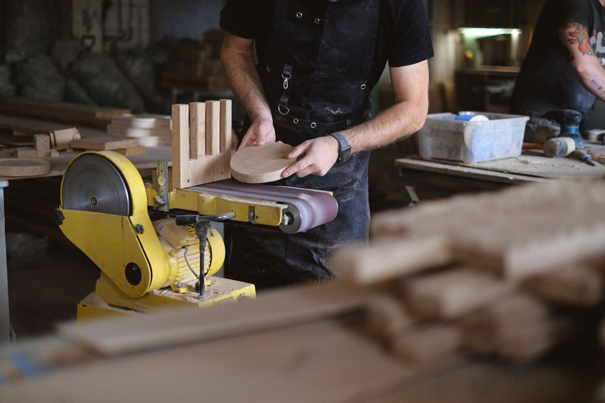
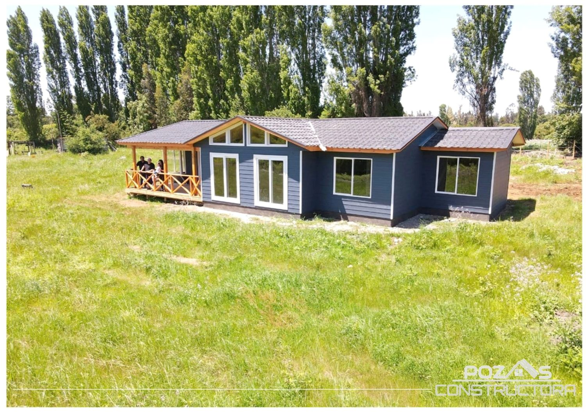
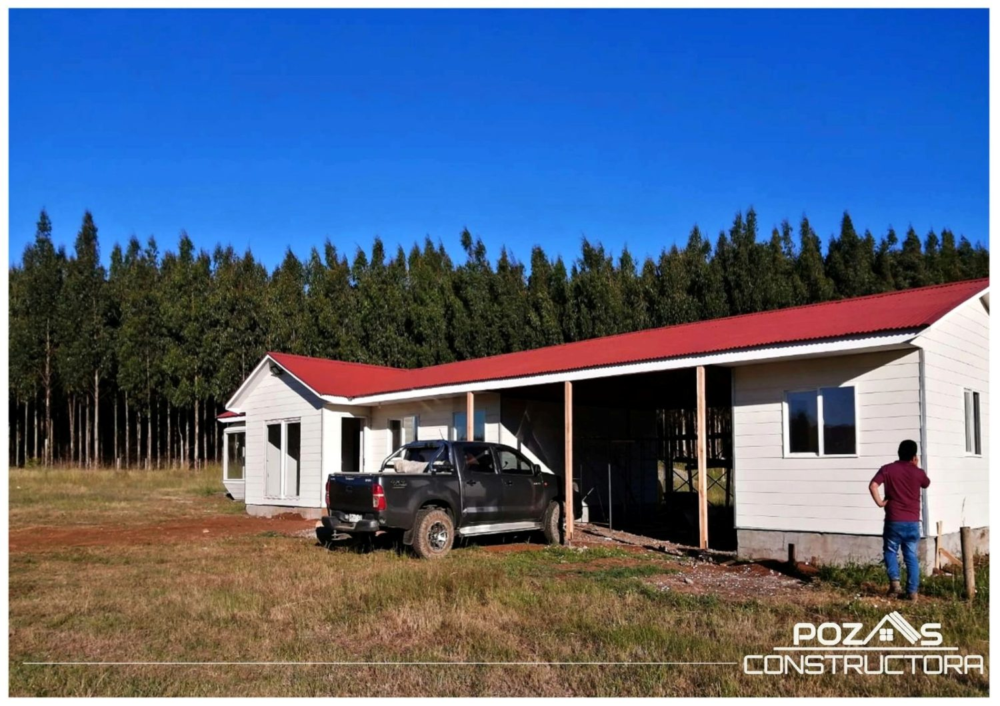
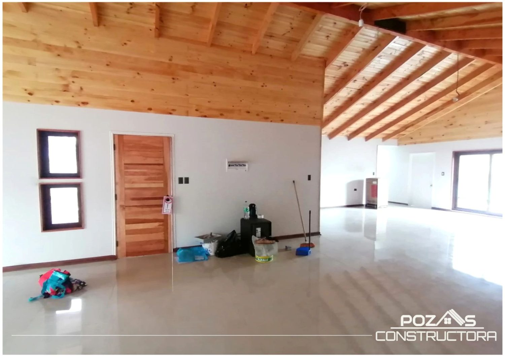
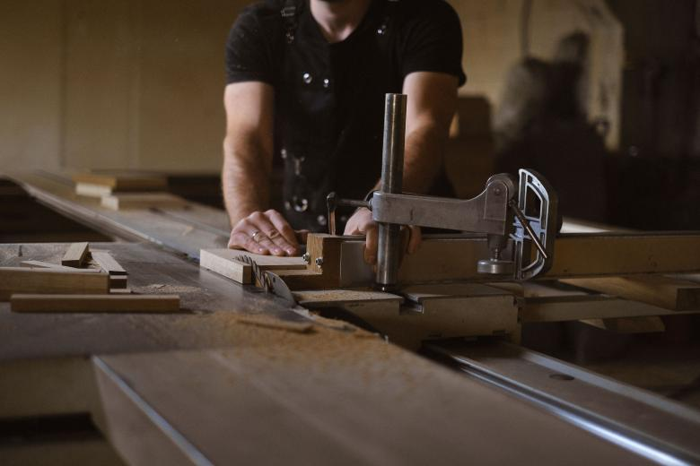

01
El acceso
Por dónde entra un camión con material. Si no entra, todo se acarrea a mano y eso se paga. Un camino angosto o un puente de madera cambian el número.
Propuesta de sitio web — preparada para Constructora Pozas por CristalWeb
Revisado el 31-08-2026: casaspoz.com sí funciona —está hecho en un armador de plantillas— y ofrece «casas llave en mano». Pero en todo el sitio la palabra «incluye» no aparece ni una vez, y «empalme» tampoco. Ésa es la oportunidad: no es que falte una web, es que falta la respuesta de la pregunta más cara del rubro.
Constructora · Freire
Es la pregunta que aparece cuando la casa ya está y hay que conectarla. Nadie la contesta antes de firmar, y es exactamente donde se cae la confianza: no por el precio, sino por lo que el cliente creyó que estaba adentro.
Ítem por ítem
«Llave en mano» significa cosas distintas en cada constructora, y esa es justamente la razón por la que hay que escribirlo. Abajo está la estructura completa con los sellos: lo que suele ir incluido, lo que casi nunca va, y lo que cada empresa define distinto. Los sellos de esta demo están sin llenar: los pone la constructora, no yo.
Fundaciones, radier, estructura, techumbre y cubierta. Es la parte que nunca está en discusión: si no está incluida, no es llave en mano. Lo que sí cambia es el estándar — el tipo de aislación, el espesor, la terminación de la techumbre.
Revestimientos, piso, pintura, puertas, molduras. Acá es donde más varía una cotización frente a otra, y donde conviene que el contrato diga la marca o el nivel de lo que se instala — no sólo «terminaciones».
El cableado, el tablero, los enchufes y la iluminación dentro de la casa. Suele ir incluido. Lo que casi nunca va incluido es el empalme, que es harina de otro costal — está más abajo.
Cañerías, artefactos y desagües dentro de la casa. Igual que la eléctrica: lo de adentro suele ir, la conexión a la red o al pozo se cotiza aparte.
Ésta es la fila que da nombre a la sección. El empalme es el trámite y la conexión con la compañía de electricidad, y depende de cosas que no controla la constructora: la distancia al poste más cercano, la capacidad de la red del sector y los tiempos de la empresa eléctrica.
Que vaya o no vaya incluido es legítimo en los dos sentidos. Lo que no es legítimo es que el cliente se entere el día que quiere encender la luz.
En terreno urbano, la conexión a la red. En terreno rural, el pozo o el puntero, que es una obra aparte con su propia incertidumbre: hasta que no se perfora, nadie sabe a qué profundidad hay agua.
El permiso de edificación, el proyecto de cálculo si corresponde y la recepción final. Algunas constructoras lo gestionan y otras entregan la casa y dejan el trámite al dueño. Los requisitos exactos los define la Dirección de Obras de cada comuna: acá no van citados por número.
Nivelar, despejar, hacer el camino por donde entra el camión. En terrenos con pendiente esto puede ser una parte importante del presupuesto y casi nunca aparece en la primera conversación.
Casi nunca van incluidos y casi siempre se dan por incluidos. Es la segunda fuente de discusión después del empalme.
Con esta tabla llena y publicada, una constructora chica gana algo que no se compra con publicidad: el cliente llega a la reunión sabiendo qué está comprando, y la conversación empieza en el proyecto en vez de en la desconfianza.
Antes de que llegue el primer camión
Dos casas iguales cuestan distinto según dónde se paren: si hay que nivelar, si el camión entra hasta la obra o hay que acarrear a mano, si el empalme queda a diez metros o a cien. Nada de eso se ve en un plano, y todo eso se cotiza. Por eso la visita a terreno va antes del precio y no después.
Antes de la primera visita
Una casa no se cotiza en el aire: se cotiza sobre un terreno concreto. Estas cuatro cosas son las que cambian el presupuesto antes de que se dibuje nada, y conviene tenerlas claras desde la primera llamada.
01
Por dónde entra un camión con material. Si no entra, todo se acarrea a mano y eso se paga. Un camino angosto o un puente de madera cambian el número.
02
Si hay red o hay que hacer pozo. En rural es lo primero que se pregunta, y la respuesta puede mover el presupuesto más que el tamaño de la casa.
03
A qué distancia está el poste más cercano. Cada metro de extensión de red se cotiza, y no lo cotiza la constructora.
04
Que el terreno esté a nombre de quien va a construir y con su rol al día. Sin eso no hay permiso posible, y es lo que más atrasa una obra que ya estaba lista para partir.
Esta página no cita ninguna norma, ningún metraje reglamentario ni ningún trámite por número: los requisitos los define la Dirección de Obras de cada comuna y cambian entre una y otra. Tampoco hay precios ni plazos. Todos los sellos del desglose están sin llenar porque sólo la constructora puede llenarlos.
«Llave en mano» es lo que diga el papel
Cada constructora lo entiende a su manera
Para conversar un proyecto
Es el número publicado en su ficha de Google.

Fotos publicadas por la propia constructora en casaspoz.com — llevan su marca de agua. No son renders ni catálogo: son casas entregadas.



falta: qué obra es cada una y de qué año — con eso la sección deja de ser tres fotos y pasa a ser un historial.
Estas seis ya aparecen más arriba en la página. Vuelven acá en otro tamaño porque una sola pasada de imágenes deja el scroll vacío, y porque de cerca se ven cosas que en grande se pierden. La procedencia de cada una está en imagenes/FUENTES.txt.


El teléfono 9 5817 0227 y que casaspoz.com está en línea y funcionando. Revisado el 31-08-2026: el sitio ofrece «casas llave en mano» y no contiene la palabra «incluye» ni la palabra «empalme» en ninguna parte.
Los nueve ítems del desglose y las cuatro condiciones del terreno. Son del rubro: describen qué se discute en cualquier llave en mano, no qué hacen ustedes.
Nueve sellos. Uno por ítem: incluido, no incluido, o depende del caso. Es la media hora de trabajo que separa esta demo de una página que vende sola — y el empalme es el que más pesa de los nueve.